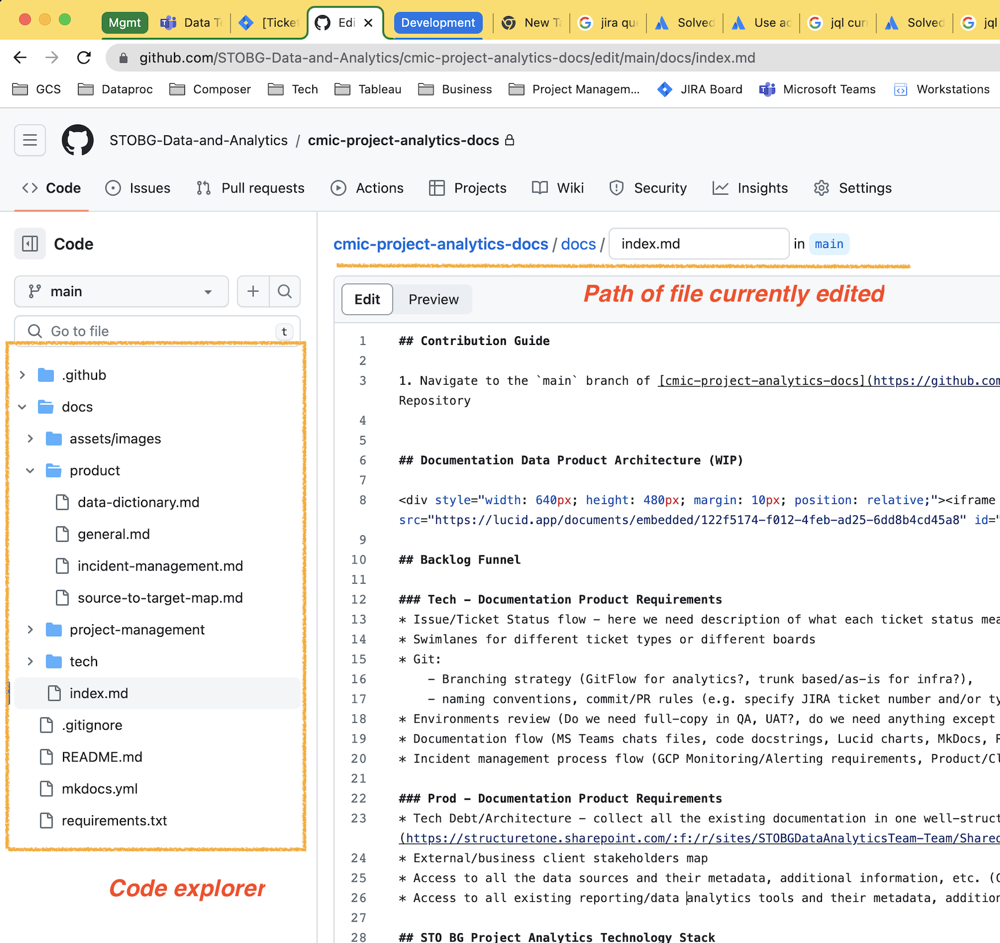
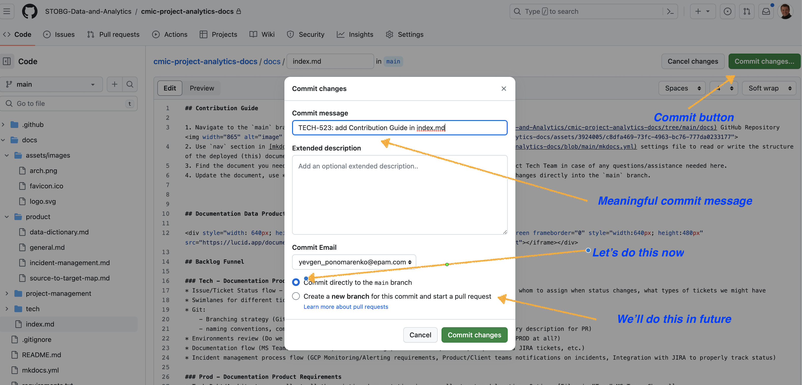
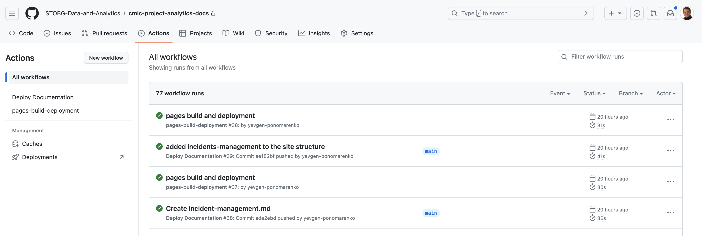

Documentation Product
The Documentation Product is static web-site built by using Material for MkDocs Documentation Tool and deployed on GitHub pages via CI/CD pipeline implemented in GitHub Actions Workflows.
To search for specific documentation please use Searh feature https://squidfunk.github.io/mkdocs-material/plugins/search/ as well as left navigation menu.
Documentation Product Architecture (WIP)
Contribution Guide
- Navigate to the
mainbranch of cmic-project-analytics-docs GitHub Repository.[Click to see screenshot]
 - Use
navsection in mkdocs.yml settings file to read or write the structure of the deployed (this) documentation site. - Find the document you need or create the new one and update
navsection accordingly. Contact Tech Team in case of any questions/assistance needed here. - Update the document, use 'Preview' to see your changes, and once completed commit your changes directly into the
mainbranch.[Click to see screenshot]
 - CI/CD workflow is configured using GitHub actions.
[Click to see screenshot]
 - In case of any errors there please contact Tech team. Otherwise your site to be deployed here.
{kind=link}
{kind=link}
{kind=link}
TODO: Add contribution guide for images, embeddings, etc.